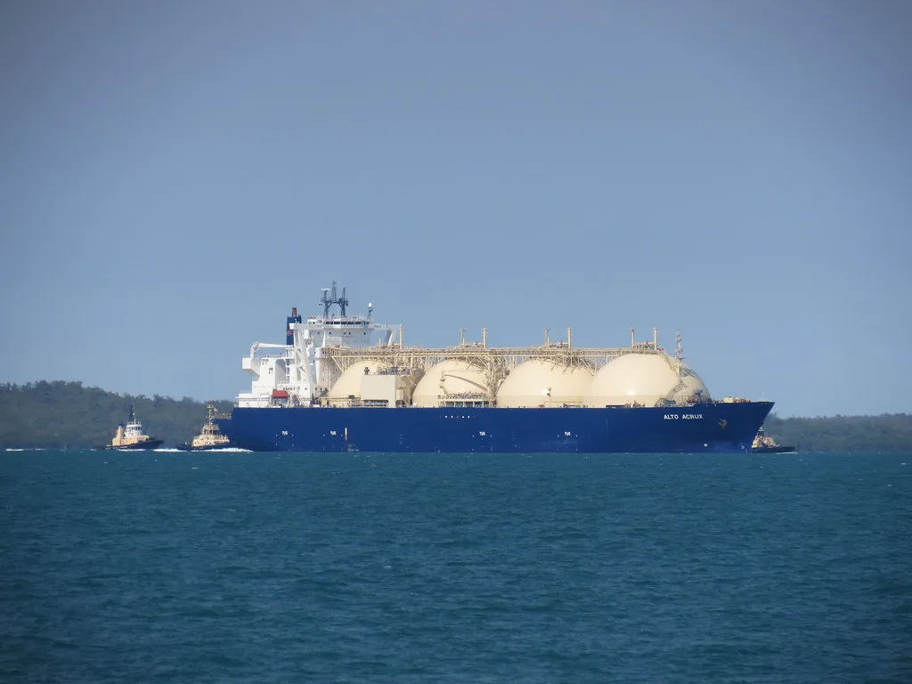
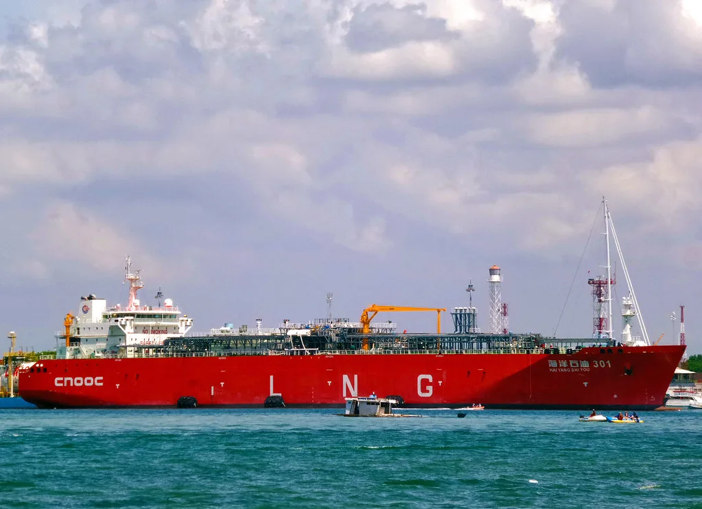

트럼프 "한국, 알래스카 투자 안 하면 2배 청구"…500억달러 LNG 사업 압박
도널드 트럼프 미국 대통령이 한국 정부를 향해 "알래스카 액화천연가스(LNG) 사업에 곧 합의하지 않으면 두 배로 청구하겠다"고 밝혔다. 트럼프 대통령은 누군가에게 전하라는 식으로 한국 측에 경고 메시지를 보냈다고 전해지는데, 정확히 무엇을 두 배로 올리겠다는 것인지는 구체적으로 언급하지 않았다. 다만 더힐 등 외신들은 앞서 양국이 합의했던 관세율을 되돌려 두 배로 올릴 수 있다는 뜻으로 해석하고 있다. 미 국무부는 뒤이어 "한미 양국 모두에 이익이 되는 윈윈 사업"이라며 진화에 나섰지만, 정상이 직접 공개적으로 투자 압박에 나섰다는 점에서 외교가의 파장이 작지 않다.
이번 발언의 배경에는 지난달 30일 트럼프 대통령이 일방적으로 공개한 대미 투자 패키지가 있다. 그는 한국이 최대 2000억달러 규모의 투자에 나설 예정이며, 여기에 6GW급 발전시설과 대형 원전 8기, 알래스카 LNG 파이프라인 사업이 포함된다고 발표했다. 알래스카 LNG에는 500억달러를 조금 넘는 금액이 들어갈 것이라는 구체적 수치까지 제시하며, 사실상 한국 정부가 이를 확정한 것처럼 못 박는 모양새를 취했다. 한국 측과 사전에 세부 조율을 마치지 않은 상태에서 미국이 먼저 투자 규모를 공표한 셈이어서, 발표 직후부터 양국 간 해석 차이를 둘러싼 논란이 이어졌다.
그러나 한국 정부의 입장은 다르다. 산업통상 당국은 텍사스주 엔시날에 가스복합화력발전소를 짓는 223억달러 규모 사업만 1호 투자처로 확정했을 뿐, 알래스카 LNG 개발은 상업적 타당성을 꼼꼼히 따져본 뒤 추진 여부를 결정할 "추후 협의 과제"라는 입장을 고수해왔다. 투자 확정 여부를 둘러싼 양국 간 간극이 이번 압박성 발언으로 다시 수면 위로 떠오른 셈이며, 정부 안에서는 섣불리 조 단위 투자를 약속할 수 없다는 신중한 기류가 여전히 강하다.

알래스카 LNG는 세계적인 석유 기업들조차 수익성을 우려해 추가 투자를 중단했던 사업으로 알려져 있다. 가스전이 발견된 지 58년이 지났지만, 약 1300㎞에 이르는 가스관과 수출시설을 새로 지어야 하는 막대한 비용이 줄곧 걸림돌이었다. 이 때문에 한국이 참여하더라도 실제 수익을 낼 수 있을지에 대한 의문은 여전히 해소되지 않은 상태이며, 국내 에너지 업계에서도 사업성 검증이 먼저 이뤄져야 한다는 목소리가 적지 않다.
트럼프 대통령이 언급한 "두 배 청구"의 실체가 무엇인지에 대해서도 해석이 분분하다. 더힐 등 외신은 기존에 합의된 관세 조건을 되돌려 관세율을 두 배로 올릴 수 있다는 경고로 보고 있는 반면, 일각에서는 투자금 자체를 두 배로 늘려 받아내겠다는 압박일 수 있다는 분석도 나온다. 다만 백악관이나 미 상무부 차원의 공식 설명은 아직 나오지 않아, 발언의 구속력이 실제로 어느 정도일지는 불확실하다는 평가도 함께 나온다.

한국 정부 내에서는 섣불리 대규모 투자를 확정하기보다 사업성 검증을 우선해야 한다는 신중론이 여전하다. 그런 만큼 이번 발언을 계기로 양국 실무 협상에서 투자 규모와 시점, 조건을 둘러싼 조율이 한층 속도를 낼 가능성이 크다. 알래스카 LNG가 한미 통상 관계의 새로운 변수로 떠오른 가운데, 향후 협상 테이블에서 구체적인 합의안이 어떻게 도출될지 주목된다.
한미 양국은 앞서 관세 협상 과정에서도 투자 금액을 둘러싸고 수차례 밀고 당기기를 벌인 바 있어, 이번 알래스카 LNG 논란 역시 비슷한 패턴으로 흐를 가능성이 제기된다. 전문가들은 미국이 투자 발표를 먼저 던지고 한국이 뒤늦게 조건을 조율하는 구도가 반복될수록, 협상의 주도권이 한쪽으로 기울 수 있다고 우려한다. 결국 이번 사안이 어떤 식으로 마무리되는지는 향후 한미 통상 관계 전반의 신뢰도를 가늠하는 시험대가 될 전망이다.